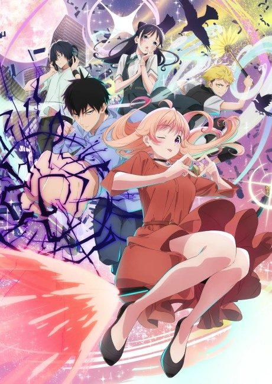
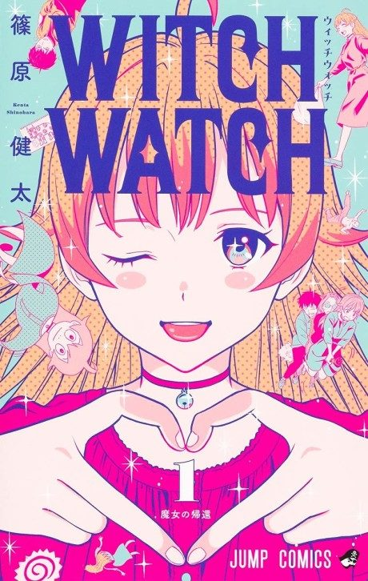

WITCH WATCH
ウィッチウォッチ
Morihito, a boy descended from ogres, becomes the familiar of his childhood friend Nico, a witch.
After the anime, read the manga from Chapter 99.
7.2AniList score
—Animeter, no votes yet
25episodes
Rate it or report where you stopped
Anime finished. Where does the manga pick up?
Start at Chapter99
The 25-episode first season adapts chapters out of order up to the end of Volume 11. Continue from Chapter 99 (Volume 12).
198ongoing
Season 1Start reading here
More like WITCH WATCH
 Done7.4
Done7.4
 Manga Ch. 819.1
Manga Ch. 819.1
 Done7.6
Done7.6
 Own end7.4
Own end7.4
Unclear7.4
The Laid-Off Cheat-Granting Mage Enjoys a Second Lease on Life Manga Ch. 2997.4
Manga Ch. 2997.4
 Film8.5
Film8.5
 Manga Ch. 248.5
Manga Ch. 248.5
 Original8.3
Original8.3
 Manga Ch. 408.4
Manga Ch. 408.4
 Manga Ch. 2566.5
Manga Ch. 2566.5
 Done7.9
Done7.9